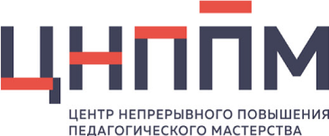

Центры непрерывного повышения профессионального мастерства педагогических работников
Ведущий институт вовлечения педагогических работников и управленческих кадров в национальную систему профессионального роста
С учетом созданных ранее ЦНППМ в 21 субъекте Российской Федерации к концу 2021 года во всех субъектах Российской Федерации созданы и функционируют ЦНППМ. Создание и функционирование ЦНППМ осуществляется в соответствии с методическими рекомендациями Минпросвещения России
С целью обеспечения соответствия и актуальности дополнительных профессиональных программ современным технологиям обучения, внедрения единых подходов к профессиональному развитию педагогических работников и управленческих кадров, своевременного обновления программ, а также формирования программ, направленных на устранение выявленных профессиональных дефицитов педагогических работников и управленческих кадров,